dat_recruits <- read.csv(here("TP/TP_06/data/recruitment.csv"))Solution pour TP 06
Recrutement de corail
Ces données proviennent des relevés du CRIOBE mesurant le recrutement de corail (c.-à-d. les larves qui se fixent). Le recrutement a été mesuré en plaçant des tuiles en terre cuite (environ 15 × 15 cm) sur trois sites différents comme substrats de colonisation. Vingt tuiles ont été déployées par site. Après un an, le nombre de recrues de corail ayant colonisé et survécu sur chaque tuile a été compté. Les données vont de 0 à 13 recrues par tuile.
Structure des données :
- Variable réponse : Nombre de recrues de corail par tuile (données de comptage)
- Variable explicative : Site (3 modalités)
- Taille de l’échantillon : 60 tuiles au total (20 par site)
Regardons les données
ggplot(data = dat_recruits, aes(x = site, y = recruits, col = site)) +
geom_jitter(size = 3, alpha = .6, height = 0) +
theme_minimal() +
theme(legend.position = "none") +
labs(x = NULL, y = "Nombre de recrues par tuile") +
scale_color_ordinal()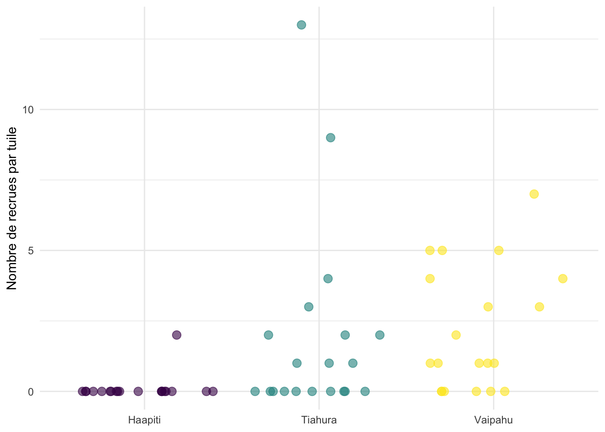
Tâche 1
Pensez-vous que des données de comptage comme celles-ci peuvent être analysées en supposant une distribution normale ?
Pourquoi pas ? Considérez les points suivants :
- Quelle est la valeur minimale possible ? Pouvons-nous observer des comptages de recrues négatifs ?
- Comment la variance se répartit-elle par rapport à la moyenne ?
NoteSolution
Comme il s’agit de données de type « nombre », seules les valeurs positives et entières (sans décimales/vergules) sont autorisées. Une distribution normale prend en compte la probabilité des nombres compris entre -∞ et ∞ et est définie de manière continue, c’est-à-dire qu’elle tient compte de la probabilité des nombres décimaux (vergules).
Quelle serait la distribution appropriée pour des données de comptage ? (Vous pouvez vous référer à la présentation des GLM pour vous guider.)
NoteSolution
La distribution de Poisson s’adapte bien aux données de comptage
Comparons maintenant deux modèles : l’un supposant une distribution normale (incorrect) et l’autre utilisant la distribution appropriée.
Modèle 1 : Distribution normale (incorrect)
lm_recruits <- lm(recruits ~ site, data = dat_recruits)
check_model(lm_recruits)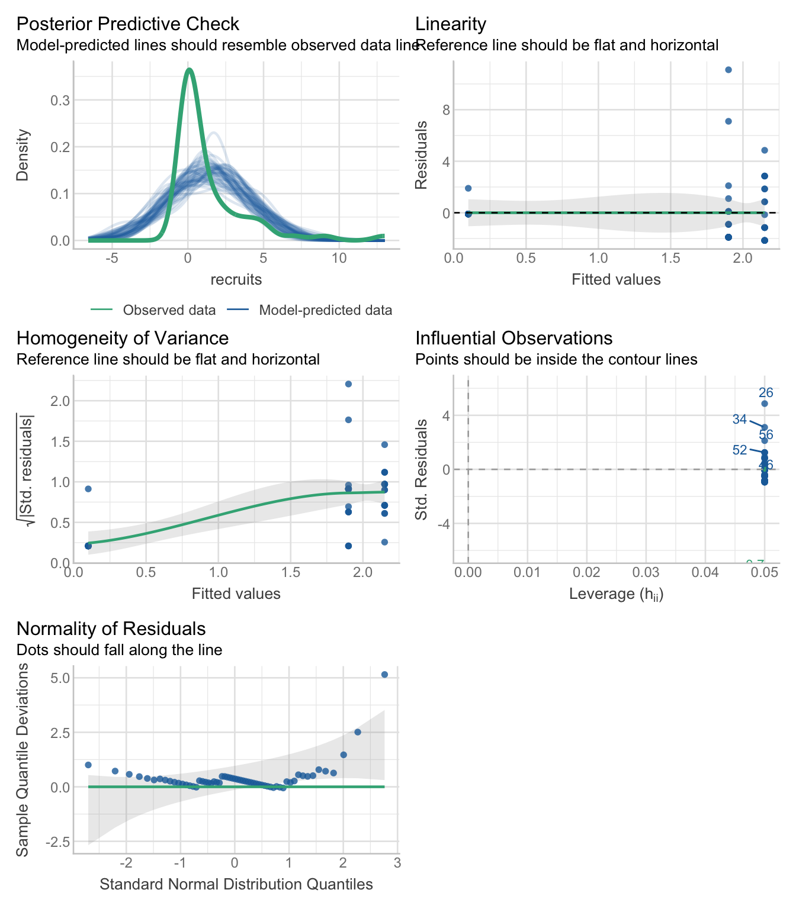
Regardez les graphiques diagnostiques, en particulier :
- “Normalité des résidus” : la distribution semble-t-elle normale ? Quels problèmes observez-vous ?
- “Homogénéité de la variance” : les résidus sont-ils également répartis selon les valeurs ajustées ?
- Premier graphique (résidus vs ajustés) : le modèle peut-il prédire de façon fiable des comptages négatifs de recrues ?
Tâche 2
Modèle 2 : Utiliser la distribution appropriée
Maintenant, ajustez le modèle correct en remplaçant ____ dans family = par la distribution appropriée. Choisissez parmi :
-
poisson()- pour des données de comptage où la moyenne et la variance sont égales -
Gamma()- pour des données continues positives -
binomial()- pour des données binaires (oui/non)
Tâche 3
Vous pouvez utiliser la fonction compare_performance() (package modelbased) pour comparer les performances des deux modèles :
compare_performance(lm_recruits, glm_recruits)# Comparison of Model Performance Indices
Name | Model | AIC (weights) | AICc (weights) | BIC (weights) | RMSE
-----------------------------------------------------------------------------
lm_recruits | lm | 277.2 (<.001) | 277.9 (<.001) | 285.6 (<.001) | 2.281
glm_recruits | glm | 219.8 (>.999) | 220.3 (>.999) | 226.1 (>.999) | 2.281
Name | Sigma | R2 | R2 (adj.) | Nagelkerke's R2 | Score_log | Score_spherical
----------------------------------------------------------------------------------------
lm_recruits | 2.340 | 0.138 | 0.108 | | |
glm_recruits | 1.000 | | | 0.600 | -1.782 | 0.096Regardez les valeurs de R² (vous vous souvenez de ce qu’elles indiquent ?). Pour le modèle linéaire “normal”, regardez la colonne “R2”, pour le GLM regardez la colonne “Nagelkerke’s R2”.
Un autre indicateur utile est l’AIC (Akaike Information Criterion), qui décrit aussi la qualité d’un modèle. Plus la valeur est faible, meilleur est le modèle !
Lequel des deux modèles s’ajuste le mieux et est le plus adapté à ce type de données ?
NoteSolution
La fonction glm_recruits est plus performante que lm_recruits, car elle tient compte du fait que les données ne peuvent être que nulles ou positives et qu’elles ne contiennent que des valeurs entières. La valeur R² est plus élevée, ce qui témoigne d’un meilleur pouvoir prédictif.
Tâche 4
Analyse des résultats
anova(glm_recruits)Analysis of Deviance Table
Model: poisson, link: log
Response: recruits
Terms added sequentially (first to last)
Df Deviance Resid. Df Resid. Dev Pr(>Chi)
NULL 59 194.81
site 2 51.534 57 143.27 6.448e-12 ***
---
Signif. codes: 0 '***' 0.001 '**' 0.01 '*' 0.05 '.' 0.1 ' ' 1Y a-t-il une différence significative des taux de recrutement entre les trois sites ?
NoteSolution
Oui, le site a une influence significative sur le recrutement des coraux (p < 0,001)
Pour comprendre ce que cela signifie biologiquement (par exemple, quel site est plus propice au recrutement ? Il pourrait être priorisé pour les AMP), nous pouvons tracer les résultats du modèle et effectuer un test post-hoc :
Visualisation des prédictions
Traçons les moyennes prédictes du modèle et les intervalles de confiance à 95 % avec les données brutes superposées.
Indice : J’ai trouvé une nouvelle fonctionnalité dans la fonction plot de modelbased permettant de superposer les données brutes (avec show_data = TRUE). J’ai aussi désactivé les lignes reliant les moyennes estimées (join_dots = FALSE), car, selon moi, cela donnerait l’impression d’une variable explicative numérique — c’est un choix personnel.
estimate_means(glm_recruits) %>%
plot(show_data = TRUE, join_dots = FALSE) +
theme_light() +
labs(title = "Recrutement de corail prédit par site")We selected `by=c("site")`.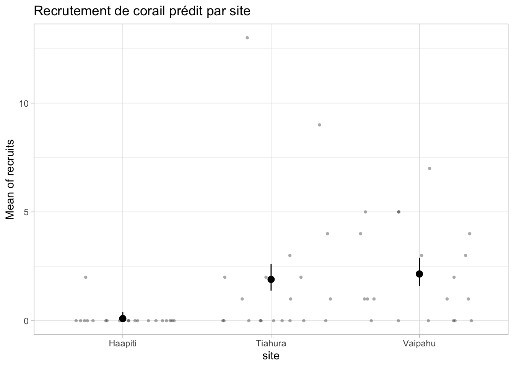
Comparaisons post-hoc
estimate_contrasts(glm_recruits, p_adjust = "tukey")We selected `contrast=c("site")`.Marginal Contrasts Analysis
Level1 | Level2 | Difference | SE | 95% CI | z | p
---------------------------------------------------------------------
Tiahura | Haapiti | 1.80 | 0.32 | [ 1.18, 2.42] | 5.69 | < .001
Vaipahu | Haapiti | 2.05 | 0.34 | [ 1.39, 2.71] | 6.11 | < .001
Vaipahu | Tiahura | 0.25 | 0.45 | [-0.63, 1.13] | 0.56 | 0.844
Variable predicted: recruits
Predictors contrasted: site
p-value adjustment method: Tukey
Contrasts are on the response-scale.Tâche 5
En vous basant sur les tests post-hoc :
- Quelles paires de sites diffèrent significativement ?
- Quelles paires ne diffèrent pas significativement ?
- Si vous ne pouviez protéger que deux des trois sites, lesquels choisiriez-vous ?
NoteSolution
Le recrutement corallien à Tiahura et à Vaipahu est nettement plus élevé qu’à Haapiti. Ces sites pourraient être considérés comme prioritaires en matière de conservation. Aucune différence significative n’a été observée entre Tiahura et Vaipahu.
Pour une publication : vous rapporteriez typiquement le tableau ANOVA (avec la p-valeur), la figure avec les prédictions et les données brutes, la valeur de R², et placeriez le tableau des contrastes post-hoc en annexe.
Biomasse de poissons
Ces données proviennent des relevés annuels de poissons du MCR LTER (station Gump à Moorea). Nous examinons la biomasse des consommateurs secondaires dans trois types d’habitats (Backreef, Forereef, Fringing) en 2024. Chaque observation représente la biomasse moyenne d’un site-habitat.
Structure des données :
- Variable réponse : Biomasse moyenne des consommateurs secondaires par site (g)
- Variable explicative : Type d’habitat (3 modalités)
- Taille de l’échantillon : 18 observations (6 sites × 3 habitats)
fish_biomass <- read.csv(here("TP/TP_06/data/fish_biomass.csv"))Visualisons les données :
ggplot(data = fish_biomass, aes(x = habitat, y = biomass, col = habitat)) +
geom_jitter(size = 3, alpha = .6, width = 0.2) +
theme_minimal() +
theme(legend.position = "none") +
labs(x = "Habitat", y = "Biomasse (g)") +
scale_color_ordinal()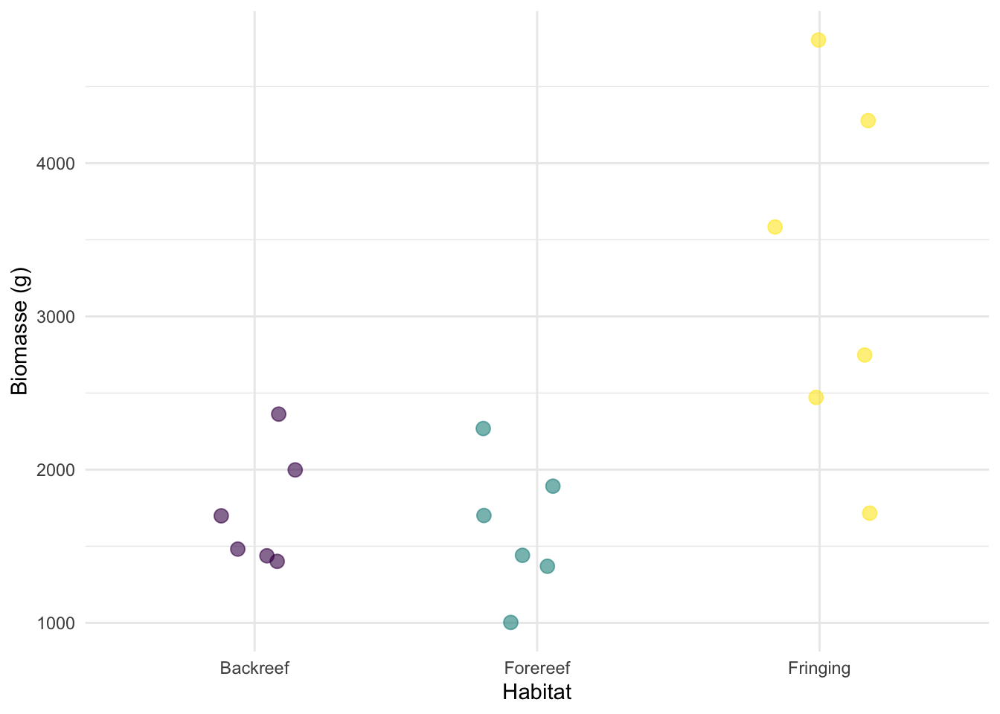
Tâche 6
Regardez le graphique et considérez :
- Les valeurs de biomasse peuvent-elles être négatives ?
- La variance (dispersion des points) semble-t-elle constante entre les habitats, ou augmente-t-elle avec des valeurs moyennes plus élevées ?
- Qu’est-ce que cela vous indique sur l’adéquation d’une distribution normale ?
NoteSolution
Toutes les valeurs de biomasse sont supérieures à 0. La variance augmente probablement avec la valeur de la biomasse. Une distribution normale inclut la probabilité d’observer des valeurs négatives et ne convient pas. Un modèle linéaire suppose une variance constante et ne convient pas lorsque la variance augmente avec la biomasse.
Modèle 1 : Distribution normale (incorrect)
Essayons d’abord d’ajuster un modèle linéaire avec une distribution normale et voyons quels problèmes apparaissent :
lm_fish <- lm(biomass ~ habitat, data = fish_biomass)
check_model(lm_fish)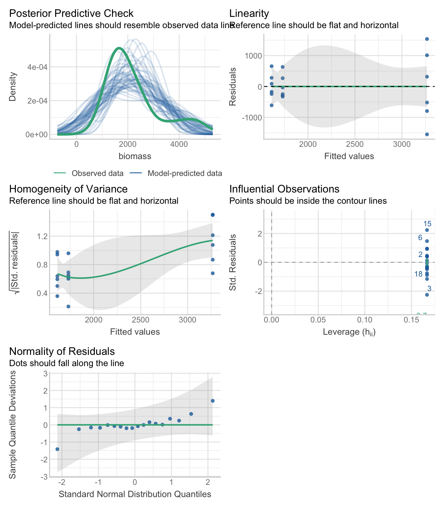
Regardez les graphiques diagnostiques. Une hypothèse est-elle violée ?
NoteSolution
Les résidus ne suivent pas une distribution normale et la variance augmente avec la biomasse.
Tâche 7
Modèle 2 : Utiliser la distribution appropriée
Ajustez maintenant le modèle correct en remplaçant ____ dans family = par la distribution appropriée. Choisissez parmi :
-
poisson()- pour des données de comptage avec moyenne et variance égales -
Gamma()- pour des données continues positives -
binomial()- pour des données binaires (oui/non)
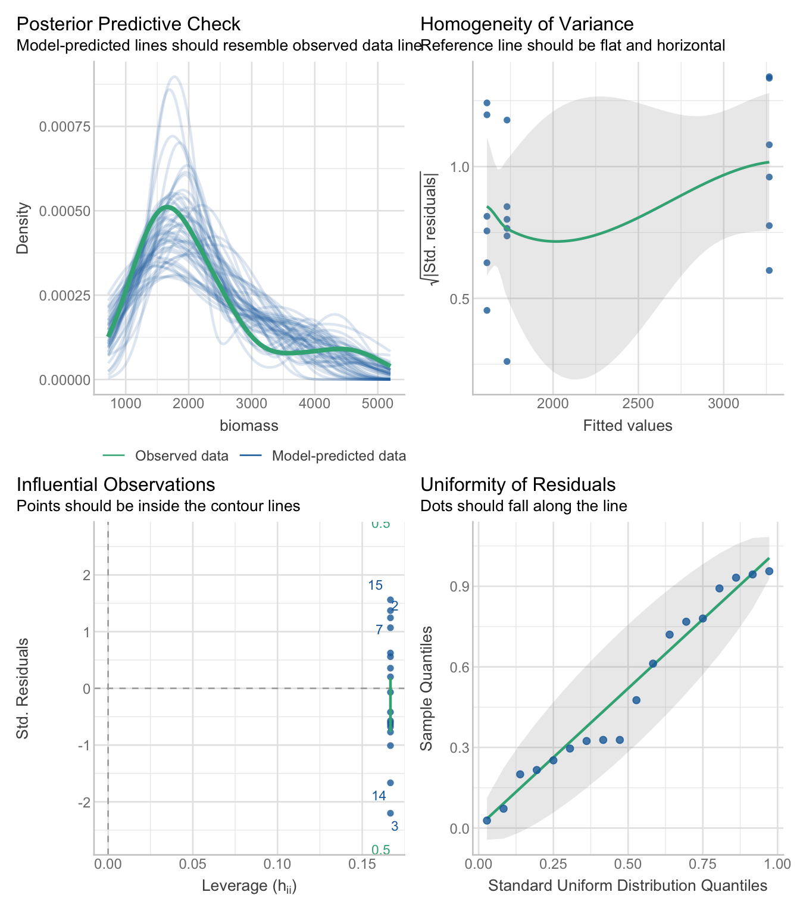
Examinez les graphiques diagnostiques. Dans quelle mesure les hypothèses semblent-elles satisfaites ?
NoteSolution
Ce graphique de diagnostic est bien plus clair que celui de la fonction lm.
Tâche 8
Comparez les deux modèles :
compare_performance(lm_fish, m_fish)# Comparison of Model Performance Indices
Name | Model | AIC (weights) | AICc (weights) | BIC (weights) | RMSE
--------------------------------------------------------------------------
lm_fish | lm | 294.2 (0.017) | 297.3 (0.017) | 297.8 (0.017) | 686.903
m_fish | glm | 286.1 (0.983) | 289.1 (0.983) | 289.6 (0.983) | 686.903
Name | Sigma | R2 | R2 (adj.) | Nagelkerke's R2
-------------------------------------------------------
lm_fish | 752.464 | 0.546 | 0.486 |
m_fish | 0.289 | | | 0.615Quel modèle est le plus approprié pour ces données et pourquoi ?
NoteSolution
m_fish est préférable à lm_fish car il tient compte du fait que les données ne peuvent être que positives et que la variance augmente avec la biomasse.
Tâche 9
Analyse des résultats
anova(m_fish)Analysis of Deviance Table
Model: Gamma, link: inverse
Response: biomass
Terms added sequentially (first to last)
Df Deviance Resid. Df Resid. Dev F Pr(>F)
NULL 17 3.2324
habitat 2 1.9189 15 1.3134 11.474 0.000948 ***
---
Signif. codes: 0 '***' 0.001 '**' 0.01 '*' 0.05 '.' 0.1 ' ' 1Y a-t-il une différence significative de biomasse des consommateurs secondaires entre les habitats ? Quelle est la p-valeur ?
NoteSolution
Oui, l’habitat a une incidence significative sur la biomasse piscicole (p < 0.001).
Tâche 10
Visualisation des prédictions
Traçons les moyennes prédictes du modèle et les intervalles de confiance à 95 % avec les données brutes superposées :
estimate_means(m_fish) %>%
plot(show_data = TRUE, join_dots = FALSE) +
theme_light()We selected `by=c("habitat")`.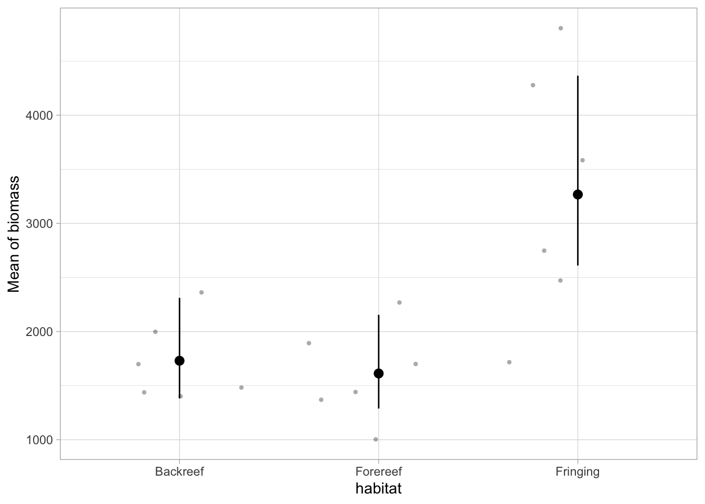
Comparaisons post-hoc
Testons formellement quelles habitats diffèrent significativement entre eux :
estimate_contrasts(m_fish, p_adjust = "tukey")We selected `contrast=c("habitat")`.Marginal Contrasts Analysis
Level1 | Level2 | Difference | SE | 95% CI | t(15) | p
------------------------------------------------------------------------------
Forereef | Backreef | -117.46 | 279.20 | [-712.57, 477.64] | -0.42 | 0.908
Fringing | Backreef | 1537.07 | 436.43 | [ 606.84, 2467.31] | 3.52 | 0.008
Fringing | Forereef | 1654.53 | 430.12 | [ 737.76, 2571.31] | 3.85 | 0.004
Variable predicted: biomass
Predictors contrasted: habitat
p-value adjustment method: Tukey
Contrasts are on the response-scale.Quel habitat a la biomasse prédite la plus élevée ? Le plus faible ?
NoteSolution
La biomasse piscicole est nettement plus élevée (p < 0,001) dans la frange du récif que dans les zones situées à l’arrière et à l’avant du récif.
Couverture corallienne
Les données de couverture corallienne utilisées jusqu’à présent proviennent de transects par points d’interception. À chaque site, un ruban de transect a été posé sur le fond. Pour 150 points, on a vérifié s’il y a du corail en dessous (“oui”) ou non (“non”); cela a été fait pour les trois genres principaux Acropora, Montipora et Pocillopora.
Lecture des données :
dat_coral <- read.csv(here("TP/TP_06/data/coral_2020.csv"))Structure des données :
- Variable réponse : Couverture corallienne sous forme de nombre de points par genre (sur 150 points par site)
- Variables explicatives : Côte (3 modalités) et genre de corail (3 modalités), incluant l’interaction
- Taille de l’échantillon : 9 observations (3 côtes × 3 genres)
Un tracé des données brutes
dat_coral %>%
ggplot(aes(x = coast, y = points, col = coral_genus)) +
geom_point(
size = 3,
position = position_jitterdodge(jitter.width = .2, dodge.width = .5)
) +
theme_minimal() +
labs(
x = "Côte",
y = "Nombre de points (sur 150)",
color = "Genre de corail"
) +
scale_color_ordinal()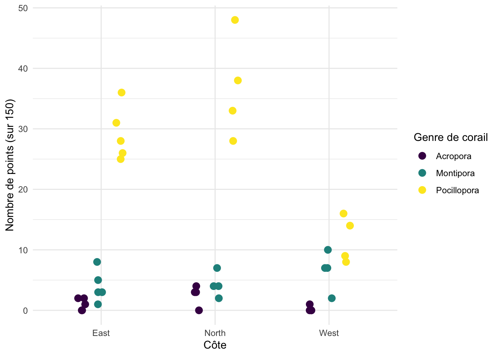
Jusqu’à présent, nous avons utilisé les données en pourcentage calculées sachant qu’il y a 150 points par site. Nous pouvons calculer la couverture en pourcentage ainsi :
dat_coral <- dat_coral %>%
mutate(percent = 100 * (points / 150))Tâche 11
Pourquoi les modèles linéaires ne conviennent-ils pas à ce type de données en pourcentage ? Pensez aux valeurs possibles de la variable réponse et aux limites éventuelles.
Pour voir les implications, nous pouvons ajuster tout de même un modèle linéaire.
NoteSolution
La couverture corallienne varie entre 0 % et 100 %, alors qu’une distribution normale prend en compte des valeurs allant de -∞ à ∞.
Modèle 1 : Distribution normale (incorrect)
lm_coral <- lm(percent ~ coast * coral_genus, data = dat_coral)
check_model(lm_coral)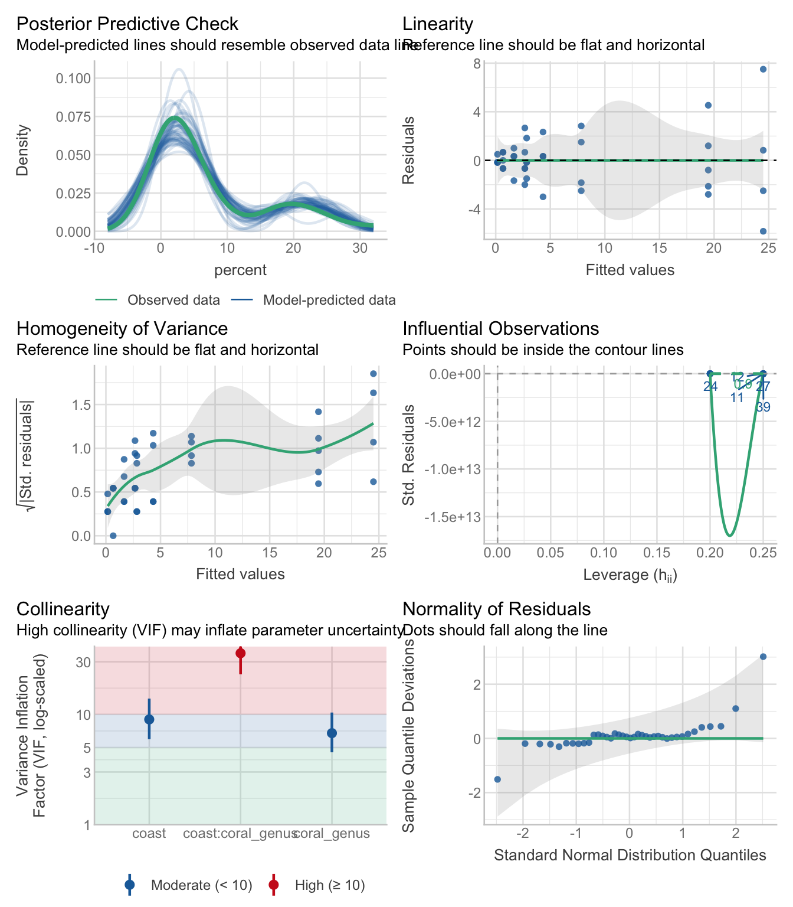
Regardez les graphiques diagnostiques. Les diagnostics peuvent sembler relativement raisonnables, mais considérez : Quelles sont les prédictions de ce modèle ? Les pourcentages peuvent-ils être négatifs ou dépasser 100 % ?
Visualisons les prédictions :
estimate_means(lm_coral) %>%
plot(show_data = TRUE, join_dots = FALSE) +
theme_light()We selected `by=c("coast", "coral_genus")`.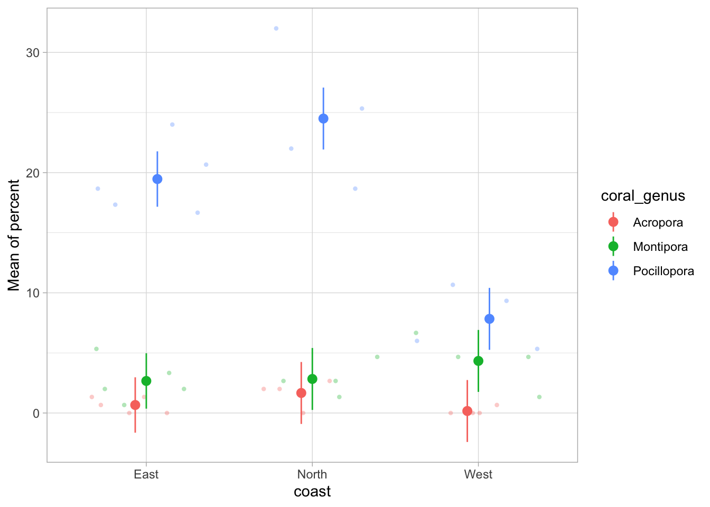
Regardez attentivement le graphique. Pouvez-vous voir des prédictions biologiquement impossibles ? Où apparaîtraient des couvertures coralliennes négatives sur ce graphique ?
NoteSolution
Le modèle prévoit une couverture corallienne négative, ce qui est biologiquement impossible !
Tâche 12
Modèle 2 : GLM avec la distribution appropriée
Ajustons maintenant un modèle avec la distribution appropriée. La manière la plus honnête consiste à utiliser les données brutes, c.-à-d. ici, les points (corail : oui/non) par transect. La précision de la mesure de la couverture diffère entre des transects avec seulement 10 points, ou des transects avec 150 points. Dans les modèles binomiaux, nous pouvons tenir compte de cela en utilisant cbind(success, failure). Dans l’exemple de corail, success est le nombre de points par transect avec du corail (colonne points) et failure le nombre de points sans corail (150 - points).
Ajustez maintenant le modèle correct en remplaçant ____ dans family = par la distribution appropriée. Choisissez parmi :
-
poisson()- pour des données de comptage avec moyenne et variance égales -
Gamma()- pour des données continues positives -
binomial()- pour des données binaires (oui/non)
Si vous choisissez un modèle binomial, utilisez cbind(points, 150 - points) comme réponse, sinon le nombre de points (mais pensez s’il y a une limite supérieure de points par transect), ou les valeurs en pourcentage calculées.
Tâche 13
J’espère que vous avez choisi un modèle binomial ici. Dans ce cas, compare_performance() ne fonctionne pas, puisque la variable réponse diffère entre les deux modèles (LM : percent, GLM : success vs. failure). Mais la décision pour le modèle correct peut ici se faire en réfléchissant à la nature des données.
Nous pouvons aussi tracer les valeurs prédites des deux modèles pour voir si un modèle prédit des valeurs impossibles (ici, des pourcentages < 0 % ou > 100 %).
Faisons-le pour le LM
estimate_means(lm_coral) %>%
plot(join_dots = FALSE) +
theme_light()We selected `by=c("coast", "coral_genus")`.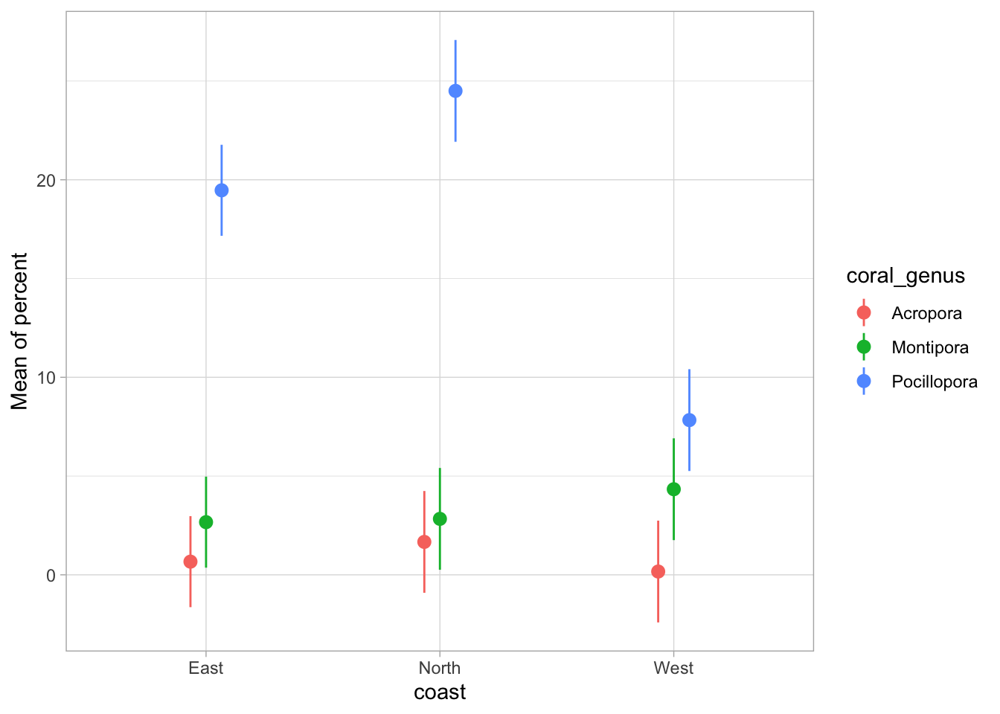
Et pour le GLM
estimate_means(glm_coral) %>%
plot(join_dots = FALSE) +
theme_light()We selected `by=c("coast", "coral_genus")`.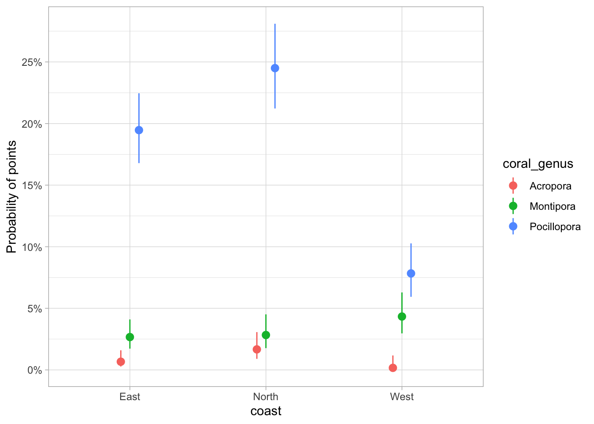
Quelles différences remarquez-vous entre les deux graphiques de modèle :
- Les intervalles de confiance sont-ils différents ?
- Toutes les prédictions restent-elles entre 0 et 100 % ?
NoteSolution
Le modèle glm prend en compte les limites de 0 % et 100 %, tandis que le modèle lm prévoit une couverture corallienne négative.
Tâche 14
Analyse des résultats
anova(glm_coral)Analysis of Deviance Table
Model: binomial, link: logit
Response: cbind(points, 150 - points)
Terms added sequentially (first to last)
Df Deviance Resid. Df Resid. Dev Pr(>Chi)
NULL 38 595.78
coast 2 45.52 36 550.25 1.303e-10 ***
coral_genus 2 473.61 34 76.64 < 2.2e-16 ***
coast:coral_genus 4 30.45 30 46.19 3.957e-06 ***
---
Signif. codes: 0 '***' 0.001 '**' 0.01 '*' 0.05 '.' 0.1 ' ' 1Y a-t-il une interaction significative entre côte et genre ? Que vous indiquent les p-valeurs ?
NoteSolution
Oui, l’interaction entre le littoral et les genres de coraux a un impact significatif sur le couvert corallien. Cela signifie que les différences entre les genres de coraux dépendent de l’orientation du littoral, et inversement.
Tâche 15
Comparaisons post-hoc
Examinons maintenant quels genres diffèrent significativement au sein de chaque côte :
estimate_contrasts(glm_coral, p_adjust = "tukey", by = "coast")We selected `contrast=c("coast", "coral_genus")`.Marginal Contrasts Analysis
Level1 | Level2 | coast | Difference | SE | 95% CI | z | p
----------------------------------------------------------------------------------------
Montipora | Acropora | East | 0.02 | 6.59e-03 | [ 0.01, 0.03] | 3.03 | 0.007
Pocillopora | Acropora | East | 0.19 | 0.01 | [ 0.16, 0.22] | 12.74 | < .001
Pocillopora | Montipora | East | 0.17 | 0.02 | [ 0.14, 0.20] | 10.76 | < .001
Montipora | Acropora | North | 0.01 | 8.56e-03 | [-0.01, 0.03] | 1.36 | 0.360
Pocillopora | Acropora | North | 0.23 | 0.02 | [ 0.19, 0.26] | 12.46 | < .001
Pocillopora | Montipora | North | 0.22 | 0.02 | [ 0.18, 0.25] | 11.51 | < .001
Montipora | Acropora | West | 0.04 | 8.48e-03 | [ 0.03, 0.06] | 4.92 | < .001
Pocillopora | Acropora | West | 0.08 | 0.01 | [ 0.05, 0.10] | 6.91 | < .001
Pocillopora | Montipora | West | 0.04 | 0.01 | [ 0.01, 0.06] | 2.54 | 0.030
Variable predicted: points
Predictors contrasted: coral_genus
p-value adjustment method: Tukey
Contrasts are on the response-scale.En vous basant sur les contrastes et la visualisation du GLM que vous avez réalisée plus haut :
- Quels genres diffèrent significativement au sein de chaque côte ?
- Les différences significatives changent-elles entre les côtes ?
- Comment ces résultats se comparent-ils à ceux suggérés par le LM ?
Pour comparaison, voici les contrastes du LM :
estimate_contrasts(lm_coral, p_adjust = "tukey", by = "coast", )We selected `contrast=c("coast", "coral_genus")`.Marginal Contrasts Analysis
Level1 | Level2 | coast | Difference | SE | 95% CI | t(30) | p
-------------------------------------------------------------------------------------
Montipora | Acropora | East | 2.00 | 1.60 | [-1.26, 5.26] | 1.25 | 0.432
Pocillopora | Acropora | East | 18.80 | 1.60 | [15.54, 22.06] | 11.78 | < .001
Pocillopora | Montipora | East | 16.80 | 1.60 | [13.54, 20.06] | 10.53 | < .001
Montipora | Acropora | North | 1.17 | 1.78 | [-2.48, 4.81] | 0.65 | 0.792
Pocillopora | Acropora | North | 22.83 | 1.78 | [19.19, 26.48] | 12.80 | < .001
Pocillopora | Montipora | North | 21.67 | 1.78 | [18.02, 25.31] | 12.14 | < .001
Montipora | Acropora | West | 4.17 | 1.78 | [ 0.52, 7.81] | 2.34 | 0.066
Pocillopora | Acropora | West | 7.67 | 1.78 | [ 4.02, 11.31] | 4.30 | < .001
Pocillopora | Montipora | West | 3.50 | 1.78 | [-0.14, 7.14] | 1.96 | 0.139
Variable predicted: percent
Predictors contrasted: coral_genus
p-value adjustment method: TukeyRemarquez les différences dans les groupes considérés comme significativement différents. Cela illustre pourquoi l’utilisation de la distribution correcte est importante - l’inférence statistique peut changer !
NoteSolution
Le modèle GLM binomial reflète mieux les caractéristiques des données. Comme il tient correctement compte de la limite inférieure de 0 %, les intervalles de confiance sont plus étroits (les prévisions sont plus précises) et davantage de comparaisons sont significatives lors du test post-hoc.